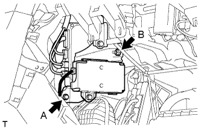

TELEMATICS TRANSCEIVER > INSTALLATION |
| 1. INSTALL NO. 2 TELEPHONE BRACKET |
Install the bracket with the 2 bolts.
| 2. INSTALL NO. 1 TELEPHONE BRACKET |
Install the bracket with the 3 bolts.
Connect the 2 connectors.
| 3. INSTALL MAYDAY BATTERY WITH BRACKET |
Attach the 2 claws to install the mayday battery.
Install the bracket with the bolt.
| 4. INSTALL TELEMATICS TRANSCEIVER |
Insert the telematics transceiver with bracket into the vehicle.
|  |
Install the telematics transceiver with bracket with the bolt and nut.
Connect the connectors.
| 5. INSTALL INSTRUMENT PANEL BOX ASSEMBLY |
 |
Connect each connector and attach the clamp.
Attach the 4 clips to install the glove compartment door.
Install the 3 screws <B> and 2 bolts <C>.
| *1 | Screw <B> |
| *2 | Bolt <C> |
| 6. INSTALL INSTRUMENT PANEL BOX DOOR COVER |
Attach the 2 claws and 2 guides to install the instrument panel box door cover.
| 7. INSTALL LOWER NO. 2 INSTRUMENT PANEL AIRBAG ASSEMBLY |
 |
Connect the connector.
Attach the 6 claws to install the instrument panel airbag.
Install the 3 bolts.
| 8. INSTALL LOWER INSTRUMENT COVER LH |
Attach the 4 claws to install the lower instrument cover.
| 9. INSTALL INSTRUMENT PANEL FINISH PANEL END RH |
Attach the 11 clips to install the instrument panel finish panel end.
| 10. INSTALL FRONT NO. 2 CONSOLE BOX INSERT |
Attach the 2 clips and guide to install the front No. 2 console box insert.
| 11. INSTALL NO. 2 INSTRUMENT PANEL UNDER COVER SUB-ASSEMBLY |
Connect the foot light and attach the clamp.
Attach the 3 clips and 2 guides to install the No. 2 instrument panel under cover.
Install the screw.
| 12. INSTALL NO. 2 INSTRUMENT PANEL REGISTER ASSEMBLY |
Attach the 8 clips to install the No. 2 instrument panel register.
| 13. INSTALL CENTER INSTRUMENT CLUSTER FINISH PANEL GARNISH |
 |
Attach the 13 clips to install the center instrument cluster finish panel garnish together with the instrument cluster finish panel garnish.
| *1 | Center Instrument Cluster Finish Panel Garnish |
| *2 | Instrument Cluster Finish Panel Garnish |
| 14. INSTALL COWL SIDE TRIM BOARD RH |
| 15. INSTALL DOOR SCUFF PLATE ASSEMBLY RH |
| 16. INSTALL INSTRUMENT SIDE PANEL RH |
Attach the 3 clips and 2 guides to install the instrument side panel.
| 17. CONNECT CABLE TO NEGATIVE BATTERY TERMINAL |
| 18. CHECK SRS WARNING LIGHT |
Check the SRS warning light (Click here).
| 19. PERFORM REGISTRATION |
Perform registration (Click here).